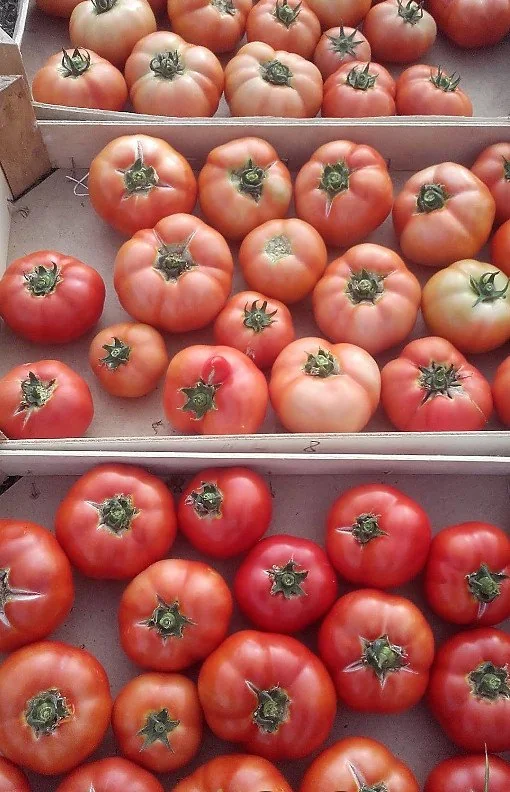
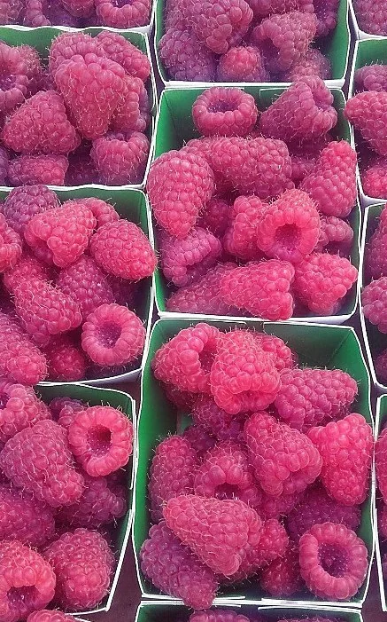
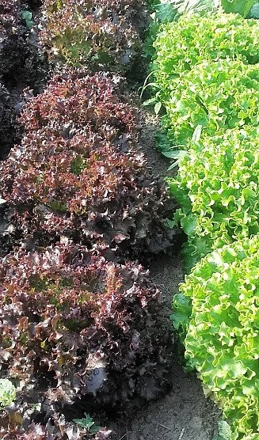
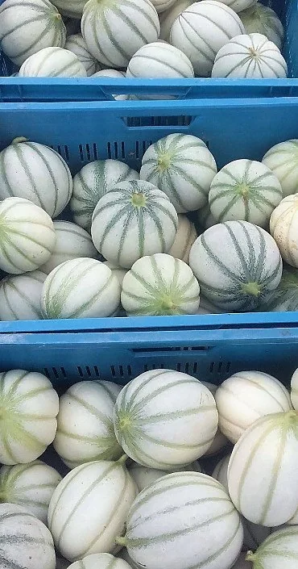

Fruits et légumes
Fruits et légumes de saison, avec des conseils pour cuisiner ceux qu’on connaît moins.
Manger local, au rythme des saisons.
Fruits, légumes et produits de saison à Lens : une partie cultivée à la ferme, le reste choisi chez plus de 20 producteurs locaux.
Lire les avis de nos clientsUn aperçu de ce que vous pouvez trouver au magasin.





Fromages de chèvre, charcuteries et préparations de producteurs locaux, à emporter pour l’apéro ou le repas du jour.
Frédéric est avant tout un homme de la terre. Il cultive lui-même salades, tomates, poireaux et céleris, en évitant les produits chimiques nocifs pour la santé.
Avec Anaïck, il a voulu aller plus loin : proposer des produits de saison, issus de leur ferme ou de producteurs voisins, en circuit court. Le magasin est né de cette idée, et de son nom : au fil des saisons.
Une sélection de produits locaux et gourmands, qui change au fil des arrivages. Passez au magasin pour découvrir les nouveautés.
Fruits et légumes de saison, avec des conseils pour cuisiner ceux qu’on connaît moins.
Huiles et vinaigres aromatisés, en bouteilles à offrir ou à garder pour la cuisine.
Confitures, miels, pâtes à tartiner et petits pots salés pour l’apéro.
Épices et mélanges pour relever vos plats toute l’année.
Bières locales et artisanales, vins et liqueurs à découvrir.
Produits laitiers, fromages frais aux herbes, chocolats et douceurs.
Produits en vrac et produits des fermes environnantes.
Paniers garnis, bouteilles et douceurs à offrir, composés à votre goût.
Et bien d’autres produits : l’assortiment change toujours avec les saisons. Demandez-nous en magasin.
Un aperçu de l’endroit avant de venir.
Les avis publiés sur Google.
Très joli magasin, bien agencé, gourmand à souhait, avec de très bons produits locaux, parfait pour profiter des produits de saison de la région ! Merci pour votre accueil, au plaisir.
Très agréable magasin et très bel assortiment. Je recommande !
Personnel très chaleureux, sympathique. Produits laitiers, fruits et légumes du vrac. Produits des fermes environnantes. On peut faire plaisir en offrant des paniers garnis avec produits cosmétiques et/ou produits consommables. Je recommande +++
Petit magasin de saison surtout avec des fruits et des légumes. J’ai toujours été très bien accueillie, avec le sourire, mais surtout très bien conseillée sur la préparation de certains « vieux » légumes que l’on connaît moins, ou avec quoi les accommoder.
Au cœur de Lens. Retrouvez l’itinéraire en un clic.
| Lundi | 15:00 – 18:00 |
| Mardi | Fermé |
| Mercredi | 09:30 – 12:30, 13:30 – 18:00 |
| Jeudi | Fermé |
| Vendredi | 09:30 – 12:30, 13:30 – 18:00 |
| Samedi | 09:30 – 15:30 |
| Dimanche | 09:30 – 12:30 |
Téléphone : 0477 27 35 56
Email : frederic.leblon@hotmail.be
Une question sur un produit ? Appelez-nous ou passez au magasin.
Des réponses aux questions que l’on se pose avant de venir.
Oui, nous proposons du vrac. Vous pouvez apporter vos propres sachets ou bocaux pour limiter les emballages.
Nos produits sont locaux et de saison. Une partie des légumes est cultivée par Frédéric et Anaïck, en évitant les produits chimiques nocifs pour la santé. Le reste vient de producteurs locaux. Pour savoir si un produit précis est certifié bio, demandez-nous en magasin.
Oui, on trouve notamment des produits cosmétiques, que l’on peut aussi glisser dans un panier garni. Pour un produit d’entretien ou un article précis, demandez-nous.
L’assortiment change avec les saisons. Passez au magasin, appelez-nous ou envoyez-nous un SMS pour savoir ce qui vient d’arriver.
Nous essayons de ne rien gaspiller. Demandez-nous en magasin ce qui est proposé à prix réduit.
Cela dépend des arrivages. Si vous suivez un régime précis, appelez-nous ou demandez conseil au magasin avant de venir.